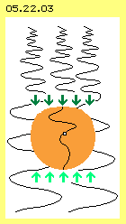
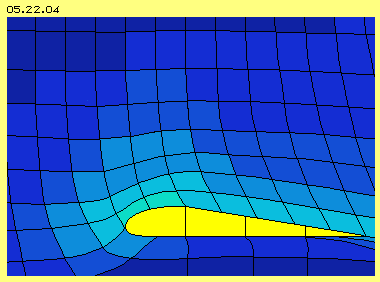
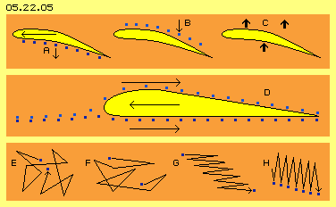
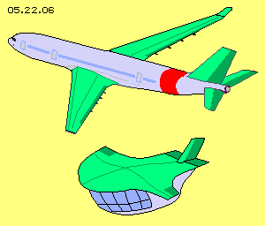
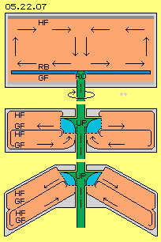
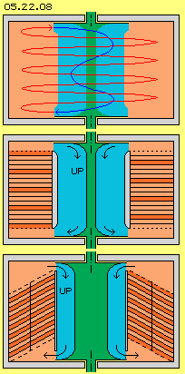
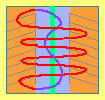

View Top Down
By the way, these mini-helicopters demonstrate clearly the general principle of flight: air must be pushed down, so the unit is lifting up and floating. The artists of the birds are breezing effortless and ´weightless´. Humans were able to create optimum solutions only by many failing attempts. However, like all over the physics, we didn´t really savvy what´s really going one. For example, the question about the real essence of gravity still has no answer.
Gravity
The earthly gravity-´constant´ can not be valid universewide, as already here it´s varying locally and temporary. Above this, the calculations at galaxies and universe would fit somehow only with the assumption, twenty times additional ´dark matter´ would exists. That common ´alternative-less´ point of view might be as scientific like the assumption, Greenland´s icebergs would be drawn southward.
An alternative? Based on my considerations, the whole universe is filled up with a swinging substance - like the age-old ´aether´ is told to be the quintessence of all existing being. Our galaxy is a twisting structure, totally build up by the aether. The stars within are tiny parts, build by the aether, drifting pure passive within that huge aether vortex. For example, that typical shape of a beam-galaxy comes up by the overlay of two circled motions turning contrary sense. Even the creation and strange motions of the spiral-arms is a logic result of.
Neither the spiral-shaped nor the sphere-shaped galaxies can be explained by the common understanding of attracting gravity forces, acting through the nothing. There must exist a substance between the stars and the motion of that aether determines the behaviour of the stars - without demanding any attraction. The ´whirlpool´ of the Sun is embedded within the complex vortex of the Milky Way. Within the ecliptic, again the planets are pushed around, pure passive, moving just like ice-clocks within a water-vortex, again without any attracting forces. Within that flat ecliptic aether-vortex, also embedded is the aether-whirlpool of the Earth, where the moon and geostationary satellites are drifting around.
Proof? It´s not possible to keep satellites at a polar orbit (e.g. cross to the sun for most best inspections): the ´aether-wind´ will blow them off, around the Earth. Explained in extension at my chapter respective the book Dancing Satellites.
That ´Something Moving´ is the common substantial medium of all being, the physical like the ´spiritual´ appearances. The characteristics and motion pattern of that basic matter are precisely described at the ´Aether-Physics and -Philosophy´ of my website respective the corresponding book.
Earthly Gravity

Each celestial body has its specific gravity, depending on its atmosphere and internal structure. Nowhere exists an abstract attraction, but actual results are based on real motions of the aether. Finally if physicists will develop realistic ideas about the properties and motion pattern of the aether, one will be able to fly really ´weightless´ within the atmosphere and far off. Finally than, the SF-, Ufo- or ET-technologies will become true here.
All is build by Aether
Up to now, only the material is assumed to be real matter, e.g. in shape of the atoms. Up to now was suggested, the aether might exist between the atoms or even penetrating atoms. Up to now, that material/aether-dualism did hinder essential progresses at physic sciences. Really new insights finally will bring the idea, really existing is only the material ather. Also the atoms exclusive exist by aether. The most strange and bizarre behaviour of sub-elementary ´particles´ of the quantum physics for example, represent short track-section of the internal aether-motions. Naturally the motions are steady changing its shape, based on the smooth transition of the complex swinging motions.
Energy-Constant is the topmost physical law. Energy can never get lost into the ´nirvana´ - however only if all motions occur within one unique medium and above this, if there is nowhere any room-of-nothing within. That´s why the aether must be a real gapless whole. The motion-possibilities are rather limited within - resulting the reduction of ´nature-law-conform´ behaviour. For example, there are only about hundred ´motion-clouds´ building the stable pattern of chemical elements.
Continuous Motion

It´s easy to control the motion pattern of air particles, like 05.22.04 shows the pretty picture of pressures and flows around a wing profile. Nevertheless, the common physical understanding of real causes, interactions and effects appear most strange.
Mechanic Pushing-Upward
Above this, that hypothesis is not quite correct: air is accelerated downward at the front side of the rotor blade and thus, the wanted upward impulse is achieved (see picture 05.22.05 at A). However, air is also ´sucked down´ at the rear side of the rotor blade. That air flows down by-itself, i.e. without delivering an upward-impulse towards the rotor (at B). Disadvantageous, the air is moving down at spiral tracks, so the rotor is idle working by parts (like analogue also the blades of conventional thrust-props).
At the start phase of an airplane, the wings are most inclined, pushing down much air masses, in order to generate uplift-forces for take-off. Airplanes weight many tons, while one cubic meter of air weights only one kilogram. Thousands of cubic meter air thus must be accelerated. Specialists did calculate correct - however they did not register, the wings can not really grasp such masses of air in time (please check that fact by yourself or see e.g. chapter A380 und Liftup).
It´s often mentioned, only one third of the uplift is done by the pressure onto the below face and two third by the ´suction´ at the upper face of the wing (see picture 05.22.05 at C). This statement is wrong: suction can never ever result any mechanical motion. Suction only reduces the resistance versus the pressure onto the opposite side. So the uplift at wings (respective at rotor- and prop-blades) results from the (partial increased) air pressure at the below face and the reduced atmospheric pressure at the upper face. The most part of uplift forces thus contributes the increased flow of the ´false air´ at the upper face (see D). This ´Dynamic Uplift´ also is working with nearby horizontal wings. That´s the economic mode at travel-speed, perfect at sailing planes respective at the ´weightless´ gliding of natural flyers.

However, there are most different attempts for explaining that ´phenomenal´ acceleration of the upside flow. The naive and still mentioned hypotheses is based on the different length of ways upside and below. Strange enough they expect, the air particle should run different distances at likely time. An other suspicion is that most dubious idea: the air upside suddenly has much wider volume available, so the density decreases, same time resulting a cooling effect. The loss of heat-energy now would be balanced by increasing motion-energy - whoever might believe?
Just as helpless one notes the fact, that dynamic uplift demands by few input forces. The profile must be pushed through the resting air (respective for circling around the rotor or prop). Energy-input is demanded to overcome the air-resistance. The generated uplift forces however are much stronger, e.g. at the profile by itself up to 1:100, at a glider about 1:50, at other flight-devices at least 1:10. That´s just near to the idea of a ´Perpetuum Mobile´ (strictly forbidden at physics). At the one hand it´s common and logic understanding, the pressure difference is absolutely sufficient for explaining the uplift effect. In spite of that fact, now still the valid doctrine of mainstream physics is: uplift only comes up, if corresponding masses of air are accelerated downward correspondingly fast.
Likely virtuous is the confusion concerning the cause and effect of the commonly valid explanation: when starting an airplane comes up a ´start-vortex´ behind the wing, which strictly demands a contrary turning circulation around the wing. Only these two motions would guarantee the constant of turning momentum as a whole. That´s an unrealistic fiction, because at both vortices are involved most different masses and most different speeds (by the way: galaxy, ecliptic and planets are all turning left - obviously without troubles). Obviously the mainstream physics can not explain logical the accelerated flow at the upper side of wings.
Just as helpless one notes the fact, that dynamic uplift demands by few input forces. The profile must be pushed through the resting air (respective for circling around the rotor or prop). Energy-input is demanded to overcome the air-resistance. The generated uplift forces however are much stronger, e.g. at the profile by itself up to 1:100, at a glider about 1:50, at other flight-devices at least 1:10. That´s just near to the idea of a ´Perpetuum Mobile´ (strictly forbidden at physics). At the one hand it´s common and logic understanding, the pressure difference is absolutely sufficient for explaining the uplift effect. In spite of that fact, now still the valid doctrine of mainstream physics is: uplift only comes up, if corresponding masses of air are accelerated downward correspondingly fast.
Real Processes and Facts
Above this, no acceleration is necessary at all. The particles, even at ´resting air,´ are running around by some 500 m/s. They fly from one collision to the next, to and fro within the (in principle) stationary aether. Picture 05.22.03 at E shows a similar track of motions. The relative void rear-upside of the wing, now allows the particle to fly longer distances until next collision. A the typical track is sketched at F: some more stretched towards right side and corresponding smaller up and down.
At G are marked only some motions forward and back again: each turn towards right side is some longer than towards left. At H are shown, how often a particle hits onto the wing: the faster the flow relative to the surface, the less pressure the particles can affect (´static´) pressure.
The additional flow of 50 m/s is only 1/10 of the quite normal steady motions of the air particle. If e.g. an air upside of the wing did fly 0.5 m towards the rear end within 0.01 second, same time the air particles really did run 5 m forward/back and upward/down, from collision to collision. So the vectors of these multiple motions show only a little bit further backward, as the air (as a whole) becomes shifted to the rear end. Each single air particle still is flying by unchanged velocity (so the ´heat´ of the air is unchanged). That storm must not be created via mechanical acceleration and energy-input. The particles are only flying a little bit longer distances into the relative void rear-upside of the wing.
Using available Energy
Instead increasing the air pressure at the below face of the wing, with strong energy-input, it´s much more effective to reduce the normal atmospheric pressure upside of the wing. Into the generated suction-area, an air particles will fall if occasionally when it got pushed rear-down above the wing. It can fly relative long distance until next collision. It leaves an empty place at its original spot, so further particles can follow. The relative void thus wanders forward, even far in front of the nose. However that ´information´ is limited to signal speed of the sound (obviously not generally known). Thus the dynamic uplift functions only up to sound speed. If faster flight is wanted, the aircraft must be pressed though that ´slow and rigid appearing´ air, demanding huge energy-input.
Evidence? An airplane flies most economic at 85 % of sound speed within the thin air of 10 km height (density there about 0.4 kg/m^3). The ´stationary resting´ air at below face of the wing equals a relative flow of 280 m/s. Based on the well known formula PD = 0.5 * rho * v^2 the dynamic pressure of the ´flow-below´ is PDU = 15680 N/m^2. Along the upper face, the air flows some 50 m/s faster, relative to the wing thus by speed of about 330 m/s. Corresponding stronger is the flow pressure upside with PDO = 21780 N/m^2. The stronger the air pressure is directed forward, the less it can affect aside, thus the weaker is the static pressure (corresponding to the strong law of energy-constant). Here, the pressures upside and below are different. The difference PA = PDO - PDU same time is the uplift-pressure PA = 6100 N/m^2 (nearby corresponding e.g. to the ´weight-capacity´ 580 kg/m^2 of the A380 wings). Further arguments and calculations are available at previous mentioned chapters.
Changing the Paradigm

The air must past the upside face of the wing with increased speed. That´s achieved, while the aircraft flies into direction of its destination airport. So far, this system makes sense, because the forward motion same time produces the uplift forces.
At helicopters and previous drones, the turning movements of the rotor blades is not completely goal-directed. Additional unproductive flows and turbulences come up. Mainly the devices are mechanically pushed-up with that uneconomic procedure and environmental pollution.
So my proposal for changing the paradigm is: guiding few air within a closed system within a closed circle. By suitable quality and design of the internal faces, one can achieve different speeds of flows and thus differing static pressures at the internal faces. This system will need much less energy-input. The resulting forces can be used vertical for uplift or horizontal for thrust. Helicopters and also aircrafts thus are independent from external air- and gas-motions, but only internal motors will drive and control these devices.
This new method is an ´inversion´ of the dynamic uplift, as the processes are mirrored inside of a closed system. The theoretic aspects are identical, so it´s only a practical problem to realize the solution. With modern tools, especially the 3D-printer, good results will be achieved soon.
First Flop 
However, additions flows did come up within that primitive model: radial out along the glide-face, up along the side-wall, inward again along the stick-face and again down at the centre (see arrows). So no uplift forces came up. I had not obeyed, the air is sucked towards each faster flow, so here moving outward at the glide-face. At previous chapter Experiments and Consequences that mistake was discussed and improvements were suggested (see that picture at the middle and below).
The circulation is organized at two levels, each within canals with a smooth glide-face and a rough stick-face. A central circulating pump (UP) keeps the air running around. The cone-shaped arrangement is especially advantageous, because the air is moving along curved faces all times. Along the smooth inner wall, the particles are always falling into relative empty areas, resulting few static pressure. Opposite, along the rough outer wall, the flow is delayed and results stronger static pressure (details see chapter Air-Pressure Bowl-Engine). The following is an improved version of.
Twist-Cone-Engine
The general motion process is sketched at picture 05.22.08 upside: the air moves upward within a ´twisted´ canal at a long circled track (red). Again turning likely sense, afterward the air (blue) flows down at a rather short way.

Below at that picture, a cone-shaped arrangement of the canals is sketched. Here e.g. only two canals (marked light red and dark red) are used. Like mentioned upside and comprehensive argued at earlier chapters, this design is more effective. At the concave outside stick-face, the air shows increased friction, affecting rather strong static pressure. Opposite, at the convex inner glide-face, the air is falling steady into relative empty areas, resulting fast flow with reduced static pressure.
Here again will come up additional cross-flows within the canals, here however with a positive effect. The flows will move faster near the centre than at outside parts of the canal. So outside, the pressure is stronger than further inside. The flows become bended inward, towards the faster flow (like Bernoulli had described clearly). Resulting is an accelerated flow circling around (just like a whirlwind). The real velocity of the air particles still keeps constant (i.e. they show unchanged heat). However the vectors of the motions become once more better structure, showing into likely directions and thus resulting a stronger forward motion. That ´cyclone´ thus runs accelerating upward through the canals. (Here the canals are differed by a vertical dividing wall, for better controlling these motion processes).
The central pump must only keep up running a well ordered flow, demanding few energy input. One can not force the air to flow into the inlet of a pump, but the air will fall into that area only by-itself. Afterward however, the pump-blades will strike the air particles into turning sense of the system. The speed of the particles really become accelerated, so the major part of the energy-input is transferred into heat. That´s quit positive, because the system as a whole now is running at a higher pressure level.
Normally, narrow canals show rather strong resistance, based on turbulent flows, resulting reduced throughput - if that´s done via pressure. Totally other kind is the behaviour of gases, which are sucked through pipes: the air particles steady are falling into direction of lower density, all times, also within narrow canals. This means, the circulating pump and all the cross-sectional faces must prefer the suction-function (opposite to common pumps preferably producing pressure, see e.g. chapter Suction- and Pressure-Blades at my website).
Data Example
The dynamic pressure is calculated by previous well nown and valid formula PD = 0.5*rho*v^2, here with density rho = 1.2 kg^3. Only 5 m/s here are assumed as the difference of flow speed between glide-faces and stick-faces. At average speeds of about 50, 70 or 90 m/s this cylinder will deliver an uplift-force of about 150, 200 and 250 kg. A helicopter of 3500 kg cross weight thus would demand a maximum of 25 units. This would demand a constructional volume e.g. of 8 m length, 2.5 m width and 0.5 m height, comparable with the design of upside sketched helicopter. According units could serve for thrust and control. If high-pressure units are used, higher performance is achieved, also suitable thrust-forces for airplanes can be generated.
Botton Line
The common theory still is dominated by that actio = reactio of Newton´s mechanics. That ´air-down = plane-up´ is not tenable (and even physicists could convince themselves after critical consideration). Indeed, an action occurs: producing an area of relative void. And immediately and completely automatic occurs a reaction: the air-particles fall into each area of less density. So a flow comes up, however only the side-effect, the corresponding reduced static pressure, is used for the uplift. That´s the ´present´, demanding no energy-input (few energy is only demanded to overcome the air-resistance for producing the suction, where in extreme case already a curved face will do).

Evert / 31.12.2016
A mankind dream came true with the new toys of video-drones: viewing the world like a bird. However most modern: only virtually by flying camera. TV now shows everything top-down: oceans and seas, flows and bridges, castles and villages, roads and tracks.
Newton made up a neutral law of gravity. He often warned, not to interpret that appearance as an attracting force. Today however, ´quite-natural´ is assumed an attraction between all celestial bodies and likely, also between the Earth and that flying device. Neither the spiral-shaped nor the sphere-shaped galaxies can be explained by the common understanding of attracting gravity forces, acting through the nothing. There must exist a substance between the stars and the motion of that aether determines the behaviour of the stars - without demanding any attraction.
Neither the spiral-shaped nor the sphere-shaped galaxies can be explained by the common understanding of attracting gravity forces, acting through the nothing. There must exist a substance between the stars and the motion of that aether determines the behaviour of the stars - without demanding any attraction.
The idea of the photon as a particle/wave is a ´science- fictional´ construction for the lack of understanding, how anything-moving-through-nothing could work. In reality, it´s a simple turn of the aether, spirally screwing forward within the aether. However, neither any waves nor particles are running forward within the space, but only the structure of that motion is wandering forward within the aether (see logo of the books).
Besides of ´mystery´ gravity, exist many unsolved physical forces, conditions and effects, insufficiently handled only by abstract terms. In reality for example, also electric charges or magnetic fields are really concrete motion pattern of the aether. So unconsciously we already manipulate motion structures of the aether. I made up a first attempts for explaining the electro-magnetic appearances at my Aether-Electro-Technics.
However much more researches must be done, so consciously we can use the huge potential of the aether most effective.
Generally, the aether anywhere is steady swinging, thus represents unlimited motion energy. Like all atoms, also the air particles are a local area of harmonious swinging aether. These are each specific motion pattern, however all times with direct contact and smooth transition to the aether all around.
Physicists are convinced, the lift-up of an airplane demands pushing-down corresponding masses of air by corresponding acceleration. This conventional method is done by the rotor blades of previous drones, analogue to commonly used technology of helicopters. That method of pushing-up the device is not economical, because the gravity force is opposed by an even stronger counter-force. The battery of the drone grows empty after few minutes and also the range of helicopters is rather limited.
It´s common understanding, uplift finally is based on the pressure difference at both sides of a wing (and analogue at the blades of rotors or props). The pressure difference automatic comes up, if the air is flowing with different speeds along both sides. The speed difference comes up, when a wing profile is pushes through the air, where the flow at the convex upper side is faster.
At chapter Uplift at Wings the real processes are explained in great length: the air upside of the wing becomes accelerated suddenly, up to 45 or 50 m/s, i.e. up to about 180 km/h respective 1/6 of sound speed. Enormous energy would be demanded to speed up a solid body thus fast, within a fraction of a second. Opposite, generating that flow within gases, practically demands null energy. That process is comparable with opening the door for an end-of-season-sale. Similar, no energy is demanded for opening the water tap, while the total flow pressure comes up immediately. A balmy wind grows up to heavy storm within a ´nozzle´ - where the air is not pressed through, but because the air rushes vehemently, by itself, into the relative void behind the bottleneck.
The dominant thinking of ´energy-input = energy-output´ here totally is ´running into the void´. A high flow pressure is even generated pure passive, on can feel e.g. when sailing around a cap or walking around the corner of a house. For generating uplift forces, only ´moving-back an inclined wall´ is necessary (for producing steady new areas of relative void). As the wings have a flow-conform shape, few thrust is demanded. There does not come up the usual process of an energy-transition, but only the given, free available motion-energy of air particles becomes usable by suitable design of surfaces and organization of motion processes.
It´s idle to argue about the real background of the appearance of uplift at wings - as flights functions sufficiently. Decisive however is that insight: dynamic uplift needs no production of additional pressure with high energy input, but it works already with a minimum energy-input, because only the given pressures are partly and locally reduced. The decisive difference is, opposite to common technologies, here won´t occur usual energy transformations. Unlimited available is the motion energy of the aether, here in shape of steady moving air particles. Only that energy is temporary directed into suitable shape by generating an artificial flow and useful structure of motion-vectors.
A decade ago, I analysed the problem of the Trout Thrust, i.e. how trouts are able to generate a thrust-force within their narrow gill. Analogue here, rather narrow canals could be used, e.g. only 3 cm high and 20 cm wide. Many canals should be piled up. Opposite to all previous discussed versions, now here the canals are arranged like a spiral staircase.
A round cylinder with radius of 0.4 m and height of 0.5 m has a volume of about 0.25 m^3. The circulating air masse within is just some 300 gram. Nevertheless that air is affecting atmospheric pressure of more than 1 kilogram at every square centimetre. A difference of few gram will result sufficient uplift, depending on the available surface. If the canals are ring-shaped between radius of 0.2 to 0.4 m and about 13 layers are piled up spiral, that unit will represent an effective face of about 5 m^2.
The tiny humming of previous camera-drones obscures the great environmental pollution of the flying devices (except the gliders). Just the roaring engines point out, that technology can not be an optimum. As the uplift practically is ´for free´, one tenth of common fuel consumption should do and also the engines should work much more quiet.
www.evert.de/ap0522e.pdf is the print version of this chapter.
Aero - Technology